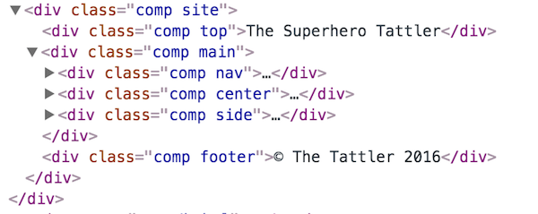
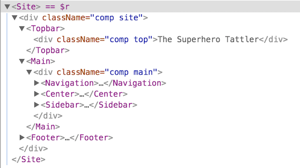
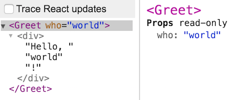

Introducing React
What's the fuss about?Templating
Converting data to UI
Here's the first thing you should learn about React: it is, at its heart, a templating solution for dynamic web sites.
That means that React converts data to UI. Commonly this step in an application is called the View layer, also known as the V in MVC.
(...although React is more than that, but this is where we start!)
If you have ever used an application framework on any platform, you have already used some sort of templating.
But even so, let's take a closer look at the templating problem before we get started with React.
We'll use the Handlebars templating library, for no other reason than the fact that it is very typical.
Here's a Handlebars template definition for showing a user. Likely this is harboured in a file called user.hbt, where .hbt is short for HandleBars Template.
<div class="user">
<img src="{{imgurl}}"/>
<h4>{{firstname}} {{lastname}}</h4>
<div>{{description}}</div>
</div>
Notice the double curly braces which are of course data placeholders.
If we send the content of such a file into Handlebars.compile...
let usertemplate = Handlebars.compile(definition);
...then we get back a template function that, when called with some data, will return the corresponding DOM structure.
So if we have this user object...
let data = {
firstname: 'John',
lastname: 'Doe',
imgurl: 'http://some.url',
description: 'Best imagination EVER.'
};
...and feed it to the template function...
let DOM = usertemplate(data);
...then DOM will be:
<div class="user">
<img src="http://some.url"/>
<h4>John Doe</h4>
<div>Best imagination EVER.</div>
</div>
Here's the original template definition for comparison:
<div class="user">
<img src="{{imgurl}}"/>
<h4>{{firsname}} {{lastname}}</h4>
<div>{{description}}</div>
</div>
Let's look at the flow zoomed out.
First we compiled a template from a definition:
That template can then transform data to DOM:
We've now peeked at how Handlebars solves the data-to-UI problem.
What about React? Let's find out!
Enter React
There's a new sheriff in town
At JSConfUS 2013, Facebook introduced a new library - React - with a radically different approach to the templating problem that lifted quite a few eyebrows.
Then at JSConfEU 2013 they gave more details, which made people even more sceptic.
Both these videos are well worth watching, both for their explanation of React and their historical significance!
So! Remember how a template function turns data into UI?
React does the exact same thing, just with a couple of name changes:
So a React app is made up by components. They are functions which you feed data, called props in React lingo, and you get DOM back.
Ok, so a React component serves the same purpose as a handlebars template. Then what is the fuss about? What is different about React?
Many things;
- We express the UI in JS instead of HTML
- We rerender the whole UI on every update (what‽)
- Components are inherently composable
We'll take a look at these differences, and more, in the upcoming sections!
Expressing the UI
Dissecting a React component
In Handlebars you write a definition in html which is then compiled into a template function
In React there is no compilation. Instead you work with JS and write the template function yourself!
Here's the mandatory HelloWorld demo!
let HelloWorld = props => <div>Hello world!</div>;
As you can see the HelloWorld component is a plain JavaScript function, although with some weird xml syntax mixed in! That's called JSX, short for JavaScript XML.
The previous example was a bit boring as it was completely static. Here instead is a HelloSomeone component which greets whoever you tell it to:
let HelloSomeone = props => <div>Hello, {props.who}!</div>;
So, inside JSX we use single braces to switch back to JavaScript.
Hang on - how was that better than Handlebars? Wasn't the earlier Handlebars version...
<div>Hello, {{who}}!</div>
...much easier to both read and write?
For this simple example, yes. But! Just regular HTML is rarely enough to formulate the view.
A competent templating solution needs to provide more opportunity to express logic in connection with describing what the output should look like.
Consider for example a view that is supposed to render a bunch of links to a list of posts. We need to...
- repeat some HTML for every link
- or conditionally display an apologetic message if there are no posts yet.
Here's a Handlebars solution to the aforementioned problem:
<div class="posts">
<h2>Posts</h2>
{{#if posts}}
{{#each posts}}
<a class="post" href="{{this.url}}">{{this.title}}</a>
{{/each}}
{{else}}
<p>No posts :(</p>
{{/if}}
</div>
As you saw, Handlebars - like so many other templating solutions - has augmented HTML with additional logic helpers, to accommodate for the fact that views often need logic.
This invariably means that you have to learn these augmentations, which are always solution-specific. Your knowledge on Handlebars helpers is useless outside a Handlebars context.
Here is a React solution to the same problem:
let ListOfPosts = props => {
let posts = (props.posts || []).map(p => (
<a class="post" href={p.url}>{p.title}</a>
);
return (
<div className="posts">
<h2>Posts</h2>
{ props.posts.length > 0 ? posts : <p>No posts ☹</p> }
</div>
);
};
Apart from the JSX syntax, everything else in the code is just pure JavaScript. Being an actual programming language, it has no problem with expressing logic.
HTML is of course better at expressing markup, since it is a markup language. This is why Facebook added the JSX syntax to JavaScript.
In essense: In a view we need to describe nested data (HTML) in connection with logic. This gives us two options:
- Use a nested data language with logic helpers
- Use a logic langauge with nested data helpers
Since logic is much more complex than nested data, option 2 seems much easier.
Yet, everyone but React chose option 1!
JSX Basics
Waiter, there's HTML in my JS!
As the previous section taught us, JSX is a light syntactic sugar aiming to make it easier to express nested data structures with JavaScript. Let's explore how it works!
Consider this line of JSX code:
<div foo="bar">Hello <strong>WORLD</strong>!</div>
If we indent it to show off the structure, then it would look like this:
<div foo="bar">
Hello
<strong>
WORLD
</strong>
!
</div>
Here's the same structure as a diagram:
The JSX is simply transformed into matching nested React.createElement calls:
React.createElement(
"div", // tagname
{foo:"bar"}, // properties
"Hello ", // child 1
React.createElement( // child 2
"strong", // tagname
null, // properties
"WORLD" // child 1
),
"!" // child 3
)
Here's the signature for React.createElement:
React.createElement(tagNameOrReactClass, props, child1, child2,...)
Only the first parameter is required.
Each child is either...
- a string in which case it is treated as a text node
- another
React.createElementcall.
Some developers don't much care for the JSX syntax. Especially with some clever aliasing it is perfectly fine to make the calls manually.
If we up top do this aliasing...
var E = React.createElement, N = null;
...then this JSX line...
<div foo="bar">Hello <strong>WORLD</strong>!</div>
...can be replaced by this:
E("div",{foo:"bar"},"Hello ",E("strong",N,"WORLD"),"!")
Some even take it a step further and create methods for all tag names. So instead of doing this...
E("div",{foo:"bar"},"Hello ",E("strong",N,"WORLD"),"!")
...they can do this:
div({foo:"bar"},"Hello ",strong(N,"WORLD"),"!")
The point of showing you this isn't that you shouldn't use JSX (because you should), but that JSX isn't magic.
It is just a very small syntax extension to let us describe nested data in a convenient and familiar manner.
We keep saying the syntax is simple, but, how exactly do we use it?
Well - we enter JSX mode simply by opening a tag. If you close the (last) tag then you are back in JS mode again.
let License = ()=> (
<p>Steal this and we'll <em>SMACK YOU SILLY</em>!</p>
);
If we want to go to JS from inside JSX mode, we use curly braces:
let msg = <span>Hello, {target || 'mate'}!</span>;
Thus the map for travelling between JS and JSX could be described like this:
Although note that this can be nested to any depth:
let output = <div>{<div>{<div>{"Inception!"}</div>}</div>}</div>;
Installing JSX
Who put the HTML in the JS?
Since JSX isn't (yet) a part of the language, some kind of transpilation must occur.

Otherwise the browser wouldn't know how to interpret the code. But where does this happen?
The absolute majority of React developers have a build step that doesn't just take care of JSX, but also allows the use of modules and perhaps other ES6/ES7 features.
This isn't unique to React, but true for JavaScript development in general.
The most popular tools for this are Webpack and Browserify.
They run JavaScript code on your local machine using Node, which in turn allows you to download dependencies using npm.
There's a lot more to be said about the build step, but we'll leave it for now as we'll use an in-browser solution to avoid complexity.
What we'll do is use a browser version of Babel, a library that can do all sorts of transformations on JavaScript code, including handling JSX.
Our setup is very easy - we include babel as a script tag along with everything else we need...
<head>
<title>Playing with React</title>
<scripτ src="lib/react.min.js"></scripτ>
<scripτ src="lib/react-dom.min.js"></scripτ>
<scripτ src="lib/babel.js"></scripτ>
</head>
...and then we put our code in script tags with type set to text/babel:
<scripτ type="text/babel">
let MyReactComponent = props => (
<div>I can use <strong>JSX</strong>!</div>
);
</scripτ>
Babel will notice the type and perform the conversion to regular JS when the document loads.
Note however that this solution is only for toying and demoing!
In a production environment you should precompile in a build step as previously discussed.
Whether we do it in a build step or in the browser - why isn't converting JSX a part of React?
Two main reasons;
- As shown JSX isn't mandatory, you can use React just fine without it.
- Also, JSX has uses outside of React. It isn't a part of React, but a convenient way to express nested data.
As a non-React example: here's JSX being used in CycleJS code:
/** @jsx hJSX */ // <-- this points JSX to use hJSX instead
import {hJSX} from '@cycle/dom';
function main(drivers) {
return {
DOM: Observable.timer(0, 1000)
.map(i => <div>Seconds elapsed: {i}</div>)
};
}
Updating the UI
acting on changes
Let's zoom back out for a bit and consider the problem of updating our UI whenever data changes.
Handlebars doesn't solve this problem at all, it just provides the initial DOM. In a dynamic app we need additional functionality to update the UI when something happens.
React instead takes a super-simple, brute force approach; it rerenders everything on every data update, using the same function for the initial render and every subsequent update.
Fine, rerendering everything on every update makes life easier for us developers, but surely that must have a huge performance penalty, lead to loss of scroll position and lots of other headaches for the user?
Nope! And here's why. We actually lied before - a React component doesn't output DOM, but virtual DOM.
The virtual DOM is simply a JavaScript representation of a DOM structure. For example, this HTML...
<div class="excerpt">
<h2>Chapter 1</h2>
<p>When MacGyver learned to fly</p>
</div>
...could be represented in JS through something like this:
let virtualDOM = {
type: "div",
attributes: {"class":"excerpt"},
children: [{
type: "h2",
children: ["Chapter 1"]
},{
type: "p",
children: ["When MacGyver learned to fly"]
}]
};
To see what virtual DOM actually looks like, check out the VirtualDOM demo!
The point of the virtual DOM is that it allows React to compare new output with the previous output, and figure out what changes needs to be made to the actual DOM.
Only those changes are actually made, so the complete rerender is just conceptual.
So here is what actually happens when the props of a component updates:
This seemingly simple idea is one of the biggest advantages of React, as it removes lots of complexity and makes components easy to reason about.
Perhaps you've heard of React Fiber? That was a complete rewrite of the diffing engine for React v16, resulting in faster diffing and rendering.
You don't need to know more than that since it is backwards compatible, buf if you're interested the detailed explanation of the rewrite is rather fascinating.
Nested components
Matryoshka time!
It might already be evident, but still worth emphasising: we can use components within components.
This sounds banal, but the composability that follows from this is a huge advantage of React.
As an example, let's say we've made components for the three sections of a news site:
let Topbar = props => (
<h2>The Superhero Tattler</h2>;
);
let Main = props => (
return // lots of stuff to generate the main section;
);
let Footer = props => (
return <div">© The Tattler 2016</div>;
);
We can now use these components in an all-encompassing Site component:
let Site = props => (
<div>
<Topbar/>
<Main/>
<Footer/>
</div>
);
You can try this example in the Nested components demo.
How can JSX tell the difference between an HTML element and a component?
let output1 = <Topbar/>; // Here we mean a component
let output2 = <div/>; // Here we mean a regular HTML div element
It is ridiculously simple - if the name is lower case, it is assumed to be a DOM tag,
let output1 = <div/>; // --> React.createElement("div");
While upper case means a component which has to be an actual name in your code.
let output2 = <Div/>; // --> React.createElement(Div);
Connecting to the DOM
Where does the plug go?
We've mentioned that React components don't output DOM, but virtual DOM (expressed with JSX). But eventually we do of course want to turn that into actual DOM.
How is this done?
Meet ReactDOM. This tiny helper library takes virtual DOM and puts it into a target DOM node.
ReactDOM.render(
<div>Hello world!</div>,
document.getElementById("container")
);
The virtual DOM input can of course also be the result of a component render:
let User = props => <div>Name: {props.name}</div>;
ReactDOM.render(
<User name="David"/>,
document.getElementById("container")
);
Note that ReactDOM is sold separately! We have to explicitly include it, as the fox-eyed among you noticed already in our Babel example:
<head>
<title>Playing with React</title>
<scripτ src="lib/react.min.js"></scripτ>
<scripτ src="lib/react-dom.min.js"></scripτ>
<scripτ src="lib/babel.js"></scripτ>
</head>
There is much to tell still, but now you have enough to say hello to the world!
React devtools
The component petri dish
So, hopefully you remember the Nested components from a couple sections seconds back? If we open the demo and check webkit inspector we'd see something like this:

That is not super useful, as there is no way of telling what output comes from what component.
As React developers it is very convenient to think in components, so not being able to do that in the debugger is very detrimental!
Enter React devtools, a plugin to Chrome or Firefox. It provide a React tab, which gives the following view instead:

Now we can easily distinguish between the components!
It can also show component details such as what props were passed. Below we show this for the HelloSomeone demo:

For more details, check the React Devtools homepage.
The devtools also do a lot more, such as showing state and context. But you don't know about any of that yet, so, never mind!
Exercise 1
Dipping our toe in the water
Now you are ready to try your hand at the first exercise! You'll find it in the course resources, named MyFirstComponent.